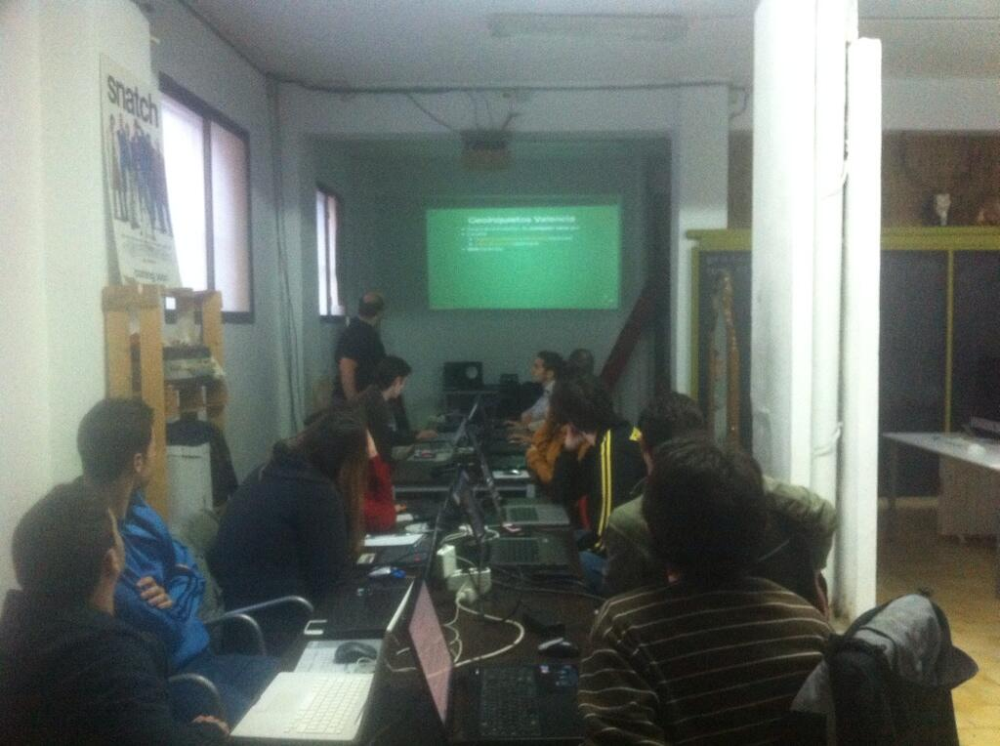

The Open Source Geospatial Community
Pedro-Juan Ferrer Matoses
GeoMundus
November 2013, Castellón de la Plana
zip
·
github
Who am I?
- Project manager & Cartographer
- Charter Member
- Liaison Officer of the Spanish Language Local Chapter
- Member of Chapter Board of Directors
Agenda
- What is OSGeo?
- OSGeo projects
- Events
- Software in your pocket
- OSGeo Labs
- OSGeo Community
What is OSGeo
- Open Source Geospatial Foundation www.osgeo.org
- A non-profit organization registered in U.S.A.
- Started in February 2006
- Similar in operation to the Apache Foundation
- Everyone is a volunteer
OSGeo Mission and Goals
To support the development of open source geospatial software, and promote its widespread use
- Provide resources for projects
- Technical
- Legal
- Funding
- Promote freely available data
- Promote project use in industry
Some more goals
- Encourage the use of standards
- Provide a common brand of quality
- Make software more accessible to users
- Provide installers
- Provide support for OSGeo software use in education
OSGeo Structure
OSGeo Committees

OSGeo Local Chapters
OSGeo Spanish Speaking Local Chapter
- Language oriented
- 492 members in mailing list
- Some devs, mainly support
Haiyan  Cartografiando en Filipinas para OSM
OSGeo Projects
Software
- Web Mapping
- Desktop Applications
- Geospatial Libraries
- Metadata catalogs
Some name-dropping

Not only software projects
- Public data
- Education & Curriculum
- Educational materials
- ICA-OSGeo Labs Network
- OSGeo Live
Events
- Annual international FOSS4G
- Regional events
Laussane, Victoria, Cape Town, Sidney, Barcelona, Denver, Nottingham, Portland
OSGIS 2004, Otawa, Canada
Where FOSS4G brand was born
1st international FOSS4G in Laussane, 2006. ~560 attendees
FOSS4G 2013 in Nottingham, UK. ~1000 attendees
Regional events
- Germany: FOSS4GIS, Berlin. 19-21 March 2014
- Portugal: SASIG, 2014?
- Spain: Jornadas de SIG Libre, Girona. 26-28 March 2014
Software in your pocket
OSGeo4W
- https://trac.osgeo.org/osgeo4w/
- Generic installer of FOSS4G for Windows
- 32 or 64bit
- Mostly C projects: QGIS, MapServer, GDAL, etc
- List of packages (x86 ~240)
OSGeo Live
Live DVD of FOSS4G software
- 61 Open Source Geospatial Applications
- Open Datasets ready to use
- Project Overviews and Quickstarts (10 minute tutorials)
- Translations in 11 languages
What is good for:
- Excellent way for new users to
quickly
try Open Source GIS for the first time - Has consistent summary of all projects, in one place
- Training resource for workshops and education
OSGeo Labs
“Geo for all”
OSGeo Labs Goals
- Establishing research and training
opportunities in open source GIS - Provide worldwide learning platform
- Build teaching and research
infrastructure worldwide
OSGeo Labs network
Source: OSGeo Labs locations
Join the network
- More info at geoforall.org
- How to join
OSGeo Community
Is the community easy to work with?
- “Is my bug fixed?”
- “The documentation is out-of-date”
- “I'm new...”
- “When is the next release?”
What does the community need?
- YOU!
- Helping with documentation
- Testing/providing feedback
- Answering questions on mailing lists
- Sharing your passion
Are you interested?
Join the discuss mailing list and come on board!
Thanks!
The Open Source Geospatial Community
Questions?
References
- The Open Source Geospatial Community, Jeff MacKenna
- OSGeo y la Comunidad Hispanohablante, P.J. Ferrer & J. Sanz
{kind=link}